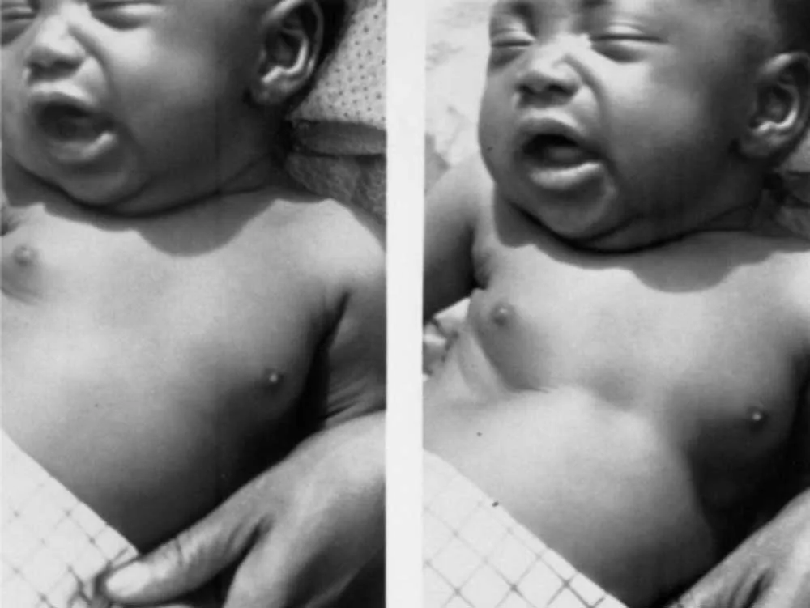
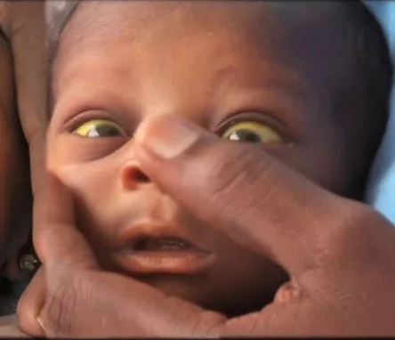
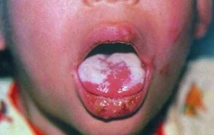
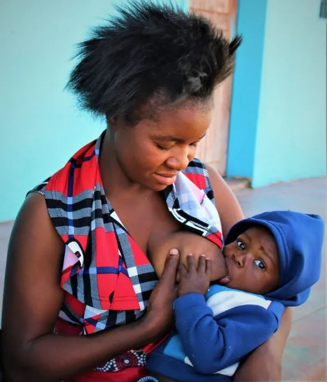
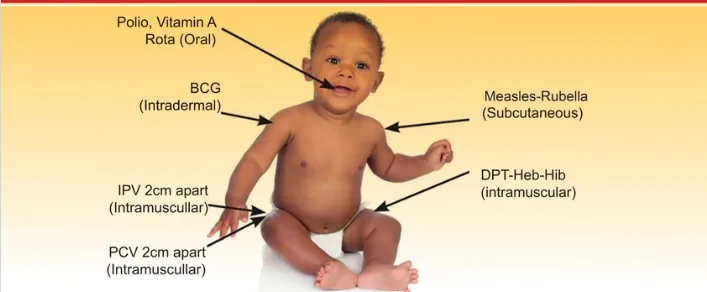
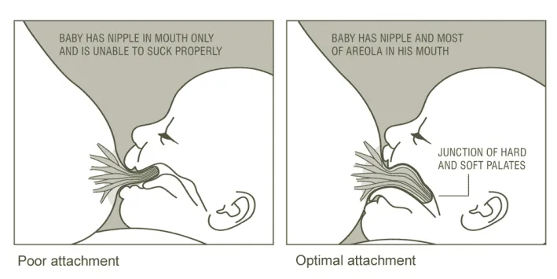

Expanded Nursing Uganda Explanation
Assess and classify a sick young infant 0-2 months should be understood beyond a short definition. Link the concept to patient history, focused assessment, common risks, nursing priorities, documentation and evaluation of outcomes.
Contents, 19 sections (tap to expand)
01 ASSESS AND CLASSIFY A SICK YOUNG INFANT 0-2 MONTHS
Young infants have special characteristics which must be considered when classifying their illness. They can become sick and die very quickly from serious bacterial infection but which may manifest themselves through general signs e.g. reduced movements, fever or even hypothermia, failure to breastfeed etc.
02 IMNCI PROCESS FOR THE SICK YOUNG INFANT
- ASK : Child’s age ASK : What are the infant’s problems? ASK : Initial or follow-up visit for problems? MEASURE : Weight and temperature
- Possible serious bacterial infection ( PSBI ) or very severe disease Pneumonia Local Infection All with severe disease require URGENT referral
- MAIN SYMPTOMS Jaundice Diarrhea Feeding problem or LOW WEIGHT FOR AGE Possible HIV INFECTION, TB EXPOSURE
- URGENT REFERRAL REQUIRED • IDENTIFY and give pre-referral treatment • URGENTLY REFER TREAT IN CLINIC • IDENTIFY TREATMENT • TREAT • COUNSEL caretaker • FOLLOW-UP CARE TREAT AT HOME • IDENTIFY TREATMENT • COUNSEL caretaker on home treatment • FOLLOW-UP CARE
03 Signs of severe disease
- Not feeding.
- Severe chest indrawing or Fast breathing.
- Convulsions.
- No movement/Lethargy.
- Temperature too high or too low.
04 ASSESS, CLASSIFY AND TREAT THE YOUNG INFANT
DO QUICK ASSESSMENT OF ALL SICK YOUNG INFANTS BIRTH UP TO 2 MONTHS*
ASK THE MOTHER WHAT THE YOUNG INFANT’S PROBLEMS ARE
- Determine if this is an initial or follow-up visit for this problem
- If initial visit, assess the child and classify as follows:
05 CHECK FOR POSSIBLE SERIOUS BACTERIAL INFECTION OR VERY SEVERE DISEASE, PNEUMONIA AND LOCAL INFECTION
ASSESS :
- ASK LOOK, LISTEN AND FEEL
- Is the infant having difficulty in feeding? Has the infant had convulsions (fits) or twitching? ASK and LOOK: Is the infant not able to feed or breastfeed? Is there blood in the stool? Look for breathing: is the baby gasping or not breathing at all even when stimulated Count the breaths in one minute. Repeat the count if elevated. Look for severe chest indrawing Look and listen for grunting or wheezing. Look for nasal flaring. Look for central cyanosis and pulse oximetry where available Look and feel for bulging anterior fontanelle. Look at the umbilicus. Is it red or draining pus? Look for severe abdominal distension. Measure axillary temperature (or feel for fever or low body temperature) Look for skin pustules. Look For high pitched cry. Look at the young infant’s movements (Young infant must be Calm)
CLASSIFY AND IDENTIFY TREATMENT
- SIGNS CLASSIFY AS IDENTIFY TREATMENT
- Any of the following signs: Respiratory rate less than 20 breaths per minute or Convulsions or convulsing now or Not able to feed or breastfeed or Fast breathing (more than 60 breaths per minute) or Severe chest indrawing or Grunting or wheezing or Nasal flaring or Bulging anterior fontanelle or Pus draining from the ear or Fever (37.5 º C* or above or feels hot) or Very low body temperature (less than 35.5 º C* or Feels cold) or Movement only when stimulated or No movements at all. Blood in stool. Severe abdominal distension High pitched cry Oxygen saturation <90% POSSIBLE SERIOUS BACTERIAL INFECTION OR VERY SEVERE DISEASE • Immediately resuscitate using a bag and mask if the baby: – Is gasping or not breathing – Has a respiratory rate less than 20 breaths per minute • If convulsing now, give Phenobarbitone • Give the first dose of Benzylpenicillin & Gentamicin. • Treat to prevent low blood sugar • Admit or refer URGENTLY to hospital** • Advise mother how to keep the infant warm on the way to the hospital. • Screen for possible TB disease and check for HIV • If oxygen saturation is less than 90%, start oxygen therapy and refer or admit • IF REFERRAL NOT POSSIBLE (see pg 37)
- Red umbilicus or draining pus or Skin pustules. And none of the signs of very severe disease LOCAL BACTERIAL INFECTION • Give Flucloxacillin Syrup • Teach the mother to treat local infections at home. • Advise mother to give home care for the young infant. • Follow-up in 2 days • Screen for possible TB disease and check for HIV. • Advise mother when to return immediately
- Fast breathing (60 breaths per minute or more) in infants 7 to 59 days old PNEUMONIA • Give amoxicillin for 7 days • Advise mother to give home care for the young infant • Follow up on day 4 of treatment
- Temperature between 35.5 º C to 36.4 º C LOW BODY TEMPERATURE • Re-warm the young infant and reassess after 1 hour. (kangaroo warming) • Treat to prevent low blood sugar • Advise mother to give home care for the young infant • Advise mother when to return immediately
- None of the signs of Very Severe Disease or Local Bacterial Infection INFECTION UNLIKELY • Advise mother to give home care for the young infant • Screen for possible TB disease and check for HIV. • Advise mother when to return immediately.
06 THEN CHECK FOR JAUNDICE
Physiological Jaundice:
- Physiological jaundice emerges between 48 to 72 hours after birth.
- It reaches its peak intensity on days 4 and 5 in term babies and day 7 in preterm infants.
- Generally, it disappears by day 14.
- Physiological jaundice does not extend to the palms and soles, requiring no treatment.
- If jaundice appears on the first day, persists for 14 days or more, and extends to palms and soles, it is considered severe jaundice and demands urgent attention.
Pathological Jaundice:
- Jaundice onset within the first day of life characterizes pathological jaundice.
- It lasts longer than 14 days in term infants and 21 days in preterm infants.
- Jaundice accompanied by fever raises concerns.
- Deep jaundice, where the palms and soles of the baby exhibit a profound yellow hue, signifies a more severe condition.
- ASK LOOK
- Does the young infant have yellow discoloration of eyes, palms or soles? If yes, for how long? Look for jaundice (yellow eyes or skin) Look at the young infants’ palms and soles. Are they yellow?
Classify Jaundice
- SIGNS CLASSIFY AS IDENTIFY TREATMENT
- Any jaundice if age less than 24 hours or Yellow eyes, palms and soles at any age Any visible yellowness in a pre-term baby regardless of when it appears SEVERE JAUNDICE • Treat to prevent low blood sugar: • Refer URGENTLY to the hospital. • Advise mother how to keep the infant warm on the way or the Hospital. • Screen for possible TB disease
- Yellowness appearing after 24 hours of age Yellowness in the eyes & skin Palms and Soles NOT yellow JAUNDICE • Advise the mother to give home care for the young infant. • Advise mother to return immediately if eyes, palms and soles appear yellow • If young infant older than 14 days refer to hospital for assessment. • Follow up in 1 day
- No jaundice JAUNDICE Advise mother to give home care for the young infant
07 THEN ASSESS FOR DIARRHOEA
- ASK LOOK
- DOES THE YOUNG INFANT HAVE DIARRHOEA OR SIGNS OF DEHYDRATION? IF YES ASK: For how long? Does the child have diarrhoea? Is the child vomiting? Is the child able to feed? * What is diarrhoea in a young infant? A young infant has diarrhoea if the stools have changed from usual pattern and are many and watery (more water than faecal matter). The normally frequent or semi-solid stools of a breastfed baby are not diarrhoea. Infants Movements • Does the infant move on his/her own? • Does the infant move even when stimulated but then stops? • Does the infant not move at all? • Is the infant restless and irritable? • Look for sunken eyes. Pinch the skin of the abdomen. Does it go back: • Very slowly (longer than 2 seconds)? • Slowly? • Immediately? • Assess the young infant’s ability to feed • Assess the young infant’s urine output
Classify for DEHYDRATION
- SIGNS CLASSIFY AS IDENTIFY TREATMENT
- Two of the following signs: Movement only when stimulated or no movement at all. Sunken eyes Skin pinch goes back very slowly Child not passing urine. Child not able to feed. SEVERE DEHYDRATION If infant has no other severe classification: • Give fluid for severe dehydration (Plan C) OR If infant also has another severe classification: • Admit/Refer URGENTLY to hospital with mother or caregiver giving frequent sips of ORS on the way • Advise mother to continue breast feeding. • If child is not passing urine admit/refer urgently to hospital. • If child is not able to feed, admit/refer urgently to hospital.
- Two of the following signs: Restless and irritable Sunken eyes Skin pinch goes back slowly. SOME DEHYDRATION • Give fluid and breast milk for some dehydration (Plan B) • Advise mother when to return immediately • Follow-up in 2 days if not improving • If infant also has VERY SEVERE CLASSIFICATION • Admit/Refer URGENTLY to hospital** with the mother giving frequent sips of ORS on the way if child has diarrhoea. • Advise mother to continue breast feeding • Follow-up in 3 days if not improving
- Not enough signs to classify as some or severe dehydration. NO DEHYDRATION • Give fluids to treat diarrhoea at home and continue breast feeding at home (Plan A) • Give ORS and Zinc sulphate if child has diarrhoea • Advise mother when to return immediately • Follow-up in 2 days if not improving.
08 CHECK FOR HIV EXPOSURE AND INFECTION
- ASK
- • Has the mother and/or young infant had an HIV test? IF YES: • What is the mother’s HIV status?: Antibody test is POSITIVE Antibody test is NEGATIVE If mother is HIV positive and NO positive DNA PCR test in child ASK: Is the mother on ART and young infant on ARV prophylaxis? IF NO TEST: Mother and young infant status unknown Perform HIV test for the mother: If positive, perform DNA PCR test for the young infant IF the mother is NOT available, do an antibody test on the child. If positive, do a DNA PCR test.
CLASSIFY HIV STATUS
- SIGNS CLASSIFY AS IDENTIFY TREATMENT
- POSITIVE DNA PCR test in young infant CONFIRMED HIV INFECTION • Initiate ART, counsel and follow up existing infections • Initiate Cotrimoxazole prophylaxis • Assess child’s feeding and provide appropriate counseling to the mother/ caregiver • Advise the mother on home care • Offer routine follow up for growth, nutrition and development • Educate caregivers on adherence and its importance • Screen for possible TB disease at every visit. • For those who do not have TB disease, start Isoniazid prophylactic therapy (IPT). Screen for possible TB disease throughout IPT • Immunize as per schedule • Follow up monthly as per the national ART guidelines and offer comprehensive management of HIV. Refer to appropriate national ART guidelines for comprehensive HIV care of the child.
- Mother HIV positive and negative DNA PCR in young infant. OR Mother HIV positive, young infant not yet tested. OR Positive antibody test in young infant whose mother is not available HIV EXPOSED • Treat, counsel and follow up existing infections • Initiate Cotrimoxazole prophylaxis • Start or continue PMTCT* prophylaxis as per the national recommendations • Assess child’s feeding and provide appropriate counseling to the mother/caregiver • Advise the mother on home care • Offer routine follow up for growth, nutrition and development • Screen for possible TB disease at every visit • Immunize as per schedule • Follow up monthly as per the national ART guidelines and offer comprehensive management of HIV. Refer to appropriate national ART guidelines for comprehensive care of the child.
- Mother’s antibody test is NEGATIVE HIV NEGATIVE • Manage presenting conditions according to IMNCI and other recommended national guidelines • Advise the mother about feeding and about her own health.
09 THEN CHECK FOR TB
- ASK LOOK AND FEEL
- For symptoms suggestive of TB • Has the young infant had contact with a person with Pulmonary Tuberculosis or chronic cough? • Has the young infant had persistent fevers for 14 days or more? • Does the young infant have pneumonia which is not responding to standard therapy? • Has the young infant been coughing for 14 days or more? Look or feel for physical signs of TB • Determine weight for age – Weight less than 1.5kg? – Weight for age less than -3 Z score?
- SIGNS CLASSIFY AS IDENTIFY TREATMENT
- Presence of ANY of the symptoms and signs suggestive of TB OR weight less than 1.5kg or 3Z score with any symptom. PRESUMPTIVE TB • Refer to hospital for further assessment and management • Ask about the caregiver’s health and treat as necessary
- A sick young infant with no TB symptoms or signs NO PRESUMPTIVE TB • Treat, counsel, and follow up existing infections • Ask about the caregiver’s health and treat as necessary
10 THEN CHECK FOR FEEDING PROBLEM OR LOW WEIGHT FOR AGE IN BREASTFED INFANTS
- ASK LOOK AND FEEL
- Is the infant breastfed? If yes, how many times in 24 hours? Does the infant usually receive any other foods or drinks? If yes, how often? If yes, what do you use to feed the infant? Determine weight for age. – Weight less than 1.5 kg? – Weight for age less than -3 Z score? Look for ulcers or white patches in the mouth (thrush).
- ASSESS BREASTFEEDING:
- • Has the infant breast-fed in the previous hour? • If the infant has not fed in the previous hour, ask the mother to put her infant to the breast. Observe the breastfeed for 4 minutes. • (If the infant was fed during the last hour, ask the mother if she can wait and tell you when the infant is willing to feed again.) • Is the infant well attached? -not well attached? -good attachment? TO CHECK ATTACHMENT, LOOK FOR: – More areola seen above infant’s top lip than below bottom lip – Mouth wide open – Lower lip turned outwards – Chin touching breast (All of these signs should be present if the attachment is good).
• Is the infant suckling effectively (that is, slow deep sucks, sometimes pausing)?
-not suckling effectively? -suckling effectively?
• Clear a blocked nose if it interferes with breastfeeding.
**** Classify all FEEDING
- SIGNS CLASSIFY AS IDENTIFY TREATMENT
- • Weight < 1.5 kg, or • Weight < -3 Z score VERY LOW WEIGHT • Treat to prevent low blood sugar. • Refer URGENTLY to hospital. • Teach the mother to keep the young infant warm on the way to hospital • Check for HIV
- • Not well attached to breast or • Not suckling eectively, or • Less than 8 breastfeeds in 24 hours, or • Receives other foods or drinks, or • Low weight for age, or • Thrush (ulcers or white patches in mouth) FEEDING PROBLEM and/or LOW WEIGHT FOR AGE • If not well attached or not suckling effectively, teach correct positioning and attachment. – If not able to attach well immediately, teach the mother to express breastmilk and feed by a cup • If breastfeeding less than 8 times in 24 hours, advise to increase frequency of feeding. Advise the mother to breastfeed as often and for as long as the infant wants, day and night. • If receiving other foods or drinks, counsel mother about breastfeeding more, reducing other foods or drinks, and using a cup. • If not breastfeeding at all: – Refer for breastfeeding counselling and possible relactation. – Advise about correctly preparing breastmilk substitutes and using a cup. • Check for TB • Advise the mother how to feed and keep the low weight infant warm at home • If thrush, teach the mother how to treat thrush at home. • Advise mother to give home care for the young infant. • Follow up FEEDING PROBLEM or thrush on day 3. • Follow up LOW WEIGHT FOR AGE on day 14.
- • Not low weight for age and no other signs of inadequate feeding NO FEEDING PROBLEM • Advise mother to give home care for the young infant. • Praise the mother for feeding the infant well.
THEN CHECK THE YOUNG INFANT‘S IMMUNIZATION STATUS
- Age Vaccine
- Birth* BCG
- bOPV-0
- 6 Weeks bOPV-1
- DPT / HepB / Hib -1
- PCV 10-1
- ROTA 1
- Give all missed doses on this visit.
- Immunize sick infant unless being reffered
- Include sick babies and those without a mother child health booklet.
- If the child has no booklet, issue a new one today.
- Advise the mother when to return for the next dose.
- Assess the child’s growth and development milestones • Plot the child’s weight on his/her growth card (child health card or mother baby passport) • Ask mother about what the child is now able to do in terms of physical movement, communication and interaction. Assess the Child for ECD / other problems including Congenital Malformations Ask mother for any other problem or identified external malformations • Check child for any external malformations and abnormal signs • Refer infant to hospital, if they have any external malformations ECD-Early Childhood Development Assess the Mother’s Health Needs • Check if had full course of tetanus toxoid, if not, give an appointment. • Ask if pregnant , if so give an antenatal appointment. If not, ask if interested to talk about family planning. • Ask if RCT has been done and the results. • If mother is an adolescent, link to appropriate clinic or service provider for support.
11 TREAT THE YOUNG INFANT
- – Gentamicin : Give 5 mg/kg/day in once daily injection. In low birthweight (<2.5kg) infants, give 4 mg/kg/day in once daily injection. To prepare the injection: From a 2 ml vial containing 40 mg/ml, remove 1 ml gentamicin from the vial and add 1 ml distilled water to make the required strength of 20 mg/ml. – Ampicillin : Give 50mg/kg IM * If referral is not possible, continue treatment for seven days
- 2. Prevent Low Blood Sugar
- – If the young infant is able to breastfeed: Ask the mother to breastfeed the young infant. – If the young infant is not able to breastfeed but is able to swallow: Give 20–50 ml (10 ml/kg) expressed breastmilk before departure. If not possible to give expressed breastmilk, give 20–50 ml (10 ml/kg) sugar water. (To make sugar water: Dissolve 4 level teaspoons of sugar (20 grams) in a 200-ml cup of clean water.) – If the young infant is not able to swallow: Give 20–50 ml (10 ml/kg) of expressed breastmilk or sugar water by nasogastric tube.
- 3. Keep the Young Infant Warm on the Way to the Hospital
- – Provide skin-to-skin contact, OR – Keep the young infant clothed or covered as much as possible all the time, especially in a cold environment. Dress the young infant with extra clothing, including a hat, gloves, and socks. Wrap the infant in a soft dry cloth and cover with a blanket.
- 4. Refer Urgently
- – Write a referral note for the mother to take to the hospital. – If the infant also has SOME DEHYDRATION OR SEVERE DEHYDRATION and is able to drink: Give the mother some prepared ORS and ask her to give frequent sips of ORS on the way. Advise the mother to continue breastfeeding. – Use the appropriate plan, A, B or C.
- – Follow the instructions below to teach the mother about each oral medicine to be given at home. Also, follow the instructions listed with each medicine’s dosage table. – Determine the appropriate medicines and dosage for the infant’s age or weight. – Tell the mother the reason for giving the medicine to the infant. – Demonstrate how to measure a dose. – Watch the mother practice measuring a dose by herself. – Ask the mother to give the dose to her infant. – Explain carefully how to give the medicine, then label and package the medicine. – If more than one medicine will be given, collect, count, and package each medicine separately. – Explain that all the tablets or syrups must be used for the course of treatment, even if the infant gets better. – Check the mother’s understanding before she leaves the clinic.
- * Local Infection : Give oral amoxicillin twice daily for 5 days * Pneumonia (fast breathing alone) in infant 7–59 days old: Give oral amoxicillin twice daily for 7 days
AMOXICILLIN Desired range is 75 to 100 mg/kg/day divided into 2 daily oral doses. Give twice daily
- WEIGHT(kg) Dispersible Tablet (250 mg) Per Dose Dispersible Tablet (125 mg) Per Dose Syrup (125 mg in 5 ml) Per dose
- 1.5 to 2.4 1/2 tablet 1 tablet 5 ml
- 2.5 to 3.9 1/2 tablet 1 tablet 5 ml
- 4.0 to 5.9 1 tablet 2 tablets 10 ml
12 COUNSEL THE MOTHER
TEACH THE CAREGIVER TO TREAT LOCAL INFECTIONS AT HOME
Follow the instructions below for every oral drug to be given at home. Also, follow the instructions listed with each drug’s dosage table.
- Explain how the treatment is given.
- Observe as the first treatment is administered in the clinic.
- In case of worsening infection, the caregiver should return to the clinic.
- Confirm the mother’s understanding before leaving the clinic.
TO TREAT SKIN PUSTULES OR UMBILICAL INFECTION
Apply Gentian Violet twice daily for 5 days.
The mother should:
- Wash hands.
- Gently cleanse pus and crusts with soap and water.
- Dry the area.
- Apply Gentian Violet.
- Wash hands.
- Administer oral antibiotics: Flucloxacillin and Ampicillin.
TO TREAT THRUSH (WHITE PATCHES IN MOUTH) OR MOUTH ULCERS
The mother should:
- Wash hands.
- Cleanse the mouth with a clean, soft cloth soaked in saltwater.
- Administer Nystatin.
- Wash hands.
If breastfed, advise the mother to wash her breast after feeds and apply the same medicine on the areola.
TREAT EYE INFECTION WITH TETRACYCLINE EYE OINTMENT
- Clean both eyes 3 times daily for 5 days.
- Wash hands.
- Gently wipe away pus with a clean cloth and water.
- Apply tetracycline eye ointment in both eyes 3 times daily.
- Open the eyes of the young infant.
- Squirt a small amount of ointment on the inside of the lower lid.
- Wash hands again.
- Continue treatment until redness is gone.
- Do not use other eye ointments or drops, or put anything else in the eye.
TEACH THE MOTHER/CAREGIVER TO GIVE ORAL DRUGS AT HOME
Follow the instructions below for every oral drug to be given at home. Also, follow the instructions listed with each drug’s dosage table.
- Determine the appropriate drugs and dosage for the child’s age or weight.
- Explain the reason for giving the drug to the child.
- Demonstrate how to measure a dose.
- Observe the mother/caregiver practicing measuring a dose.
- Request the mother/caregiver to give the first dose to the child.
- Explain carefully how to administer the drug, then label and package the drug.
- If more than one drug will be given, collect, count, and package each drug separately.
- Emphasize that all oral drug tablets or syrups must be used to finish the course of treatment, even if the child improves.
- Confirm the mother’s/caregiver’s understanding before they leave the clinic.
TEACH CORRECT POSITIONING AND ATTACHMENT FOR BREASTFEEDING
Demonstrate how to hold the infant:
- With the infant’s head and body straight.
- Facing her breast, with the infant’s nose opposite her nipple.
- With the infant’s body close to her body.
- Supporting the infant’s whole body, not just the neck and shoulders.
Show how to help the infant attach:
- Touch the infant’s lips with her nipple.
- Wait until the infant’s mouth is wide open.
- Move the infant quickly onto her breast, aiming the infant’s lower lip well below the nipple.
- Look for signs of good attachment and effective suckling. If not achieved, try again.
- If still ineffective, ask the mother to express breast milk and feed with a cup and spoon in the clinic.
- If able to feed with a cup and spoon, advise the mother to continue breastfeeding and express breast milk after each feed.
- If not able to feed with a cup and spoon, refer to the hospital.
TEACH THE MOTHER TO TREAT BREAST OR NIPPLE PROBLEMS
- If the nipple is flat or inverted, evert the nipple several times with fingers before each feed and put the baby on the breast.
- If the nipple is sore, apply breast milk for a soothing effect and ensure correct positioning and attachment. If discomfort persists, feed expressed breast milk with a cup and spoon.
- If breasts are engorged, let the baby continue to suck if possible. If the baby cannot suckle effectively, help the mother express milk and then put the young infant to the breast. Applying warm compresses on the breast may help.
- If breasts develop an abscess, advise the mother to feed from the other breast and refer. If the young infant needs more milk, provide appropriate formula.
TEACH THE MOTHER HOW TO KEEP THE YOUNG INFANT WITH LOW WEIGHT OR LOW BODY TEMPERATURE WARM AT HOME:
- Avoid bathing the young infant with low weight or low body temperature; instead, sponge with lukewarm water to clean (in a warm room).
- Promote skin-to-skin contact (Kangaroo mother care) as much as possible, day and night.
- When not in skin-to-skin contact or if this is not possible:
- Warm the room (>25°C) with a home heater.
- Clothe the young infant in 3-4 layers of warm clothes, cover the head with a cap (include gloves and socks), and wrap him/her in a soft dry cloth, and cover with a warm blanket or shawl.
- Let the baby and mother lie together on a soft, thick bedding.
- Change clothes (e.g., napkins) whenever they are wet.
- Periodically feel the feet of the baby, baby’s feet should always be warm to touch.
1. Correct Positioning and Attachment for Breastfeeding
Show the mother how to hold her infant:
- With the infant’s head and body in line.
- With the infant approaching the breast with the nose opposite to the nipple.
- With the infant held close to the mother’s body.
- With the infant’s whole body supported, not just the neck and shoulders.
Show her how to help the infant attach:
- Touch her infant’s lips with her nipple.
- Wait until her infant’s mouth is opening wide.
- Move her infant quickly onto her breast, aiming the infant’s lower lip well below the nipple.
- Look for signs of good attachment and effective suckling. If attachment or suckling is not good, try again.
- Put a cloth on the infant’s front to protect his clothes as some milk can spill.
- Hold the infant semi-upright on the lap.
- Hold the cup so that it rests lightly on the infant’s lower lip.
- Tip the cup so that the milk just reaches the infant’s lips.
- Allow the infant to take the milk himself. DO NOT pour the milk into the infant’s mouth.
Ask the mother to:
- Wash her hands thoroughly.
- Make herself comfortable.
- Hold a wide-necked container under her nipple and areola.
- Place her thumb on top of the breast and the other fingers on the underside of the breast so they are opposite each other (at least 4 cm from the tip of the nipple).
- Compress and release the breast tissue between her thumb and fingers a few times.
- If the milk does not appear, she should reposition her thumb and fingers closer to the nipple and compress and release the breast as before.
- Compress and release all the way around the breast, keeping her thumb and fingers the same distance from the nipple.
- Be careful not to squeeze the nipple or rub the skin or move her thumb or fingers on the skin.
- Express one breast until the milk just drips, then express the other breast until the milk just drips.
- Alternate between breasts 5 or 6 times, for at least 20 to 30 minutes.
- Stop expressing when the milk no longer drips from the start.
- Keep the young infant in the same bed with the mother.
- Keep the room warm (at least 25°C) with a home heating device and ensure there is no draught of cold air.
- Avoid bathing the low-weight infant. When washing or bathing, do it in a very warm room with warm water, dry immediately and thoroughly after bathing, and clothe the young infant immediately.
- Change clothes (e.g., nappies) whenever they are wet.
- Provide skin-to-skin contact as much as possible, day and night. For skin-to-skin contact(KANGAROO METHOD/KANGAROO MOTHER CARE):
- Dress the infant in a warm shirt open at the front, a nappy, hat, and socks.
- Place the infant in skin-to-skin contact on the mother’s chest between the mother’s breasts. Keep the infant’s head turned to one side.
- Cover the infant with the mother’s clothes (and an additional warm blanket in cold weather).
- When not in skin-to-skin contact, keep the young infant clothed or covered as much as possible at all times. Dress the young infant with extra clothing, including a hat and socks, loosely wrap the young infant in a soft dry cloth, and cover with a blanket.
- Check frequently if the hands and feet are warm. If cold, re-warm the baby using skin-to-skin contact.
- Breastfeed the infant frequently (or give expressed breastmilk by cup).
EXCLUSIVELY BREASTFEED THE YOUNG INFANT (for breastfeeding mothers)
- Give only breastfeeds to the young infant.
- Breastfeed frequently, as often and for as long as the infant wants, day or night, during sickness and health.
MAKE SURE THAT THE YOUNG INFANT IS KEPT WARM AT ALL TIMES
- In cool weather, cover the infant’s head and feet and dress the infant with extra clothing.
WHEN TO RETURN (Follow-up visit)
- Infant’s Condition Follow-up Day
- JAUNDICE Day 2
- DIARRHOEA Day 3
- FEEDING PROBLEM Day 3
- THRUSH Day 3
- LOCAL INFECTION Day 3
- PNEUMONIA Day 4
- SEVERE PNEUMONIA (referral refused or not possible) Day 4
- LOW WEIGHT FOR AGE (in infant receiving no breast milk) Day 7
- LOW WEIGHT FOR AGE (in breastfed infant) Day 14
- CONFIRMED HIV INFECTION or HIV EXPOSED: POSSIBLE HIV INFECTION Per national guidelines
Advise the caretaker to return immediately if the young infant has any of these signs:
- Breastfeeding poorly
- Reduced activity
- Becomes sicker
- Develops a fever
- Feels unusually cold
- Develops fast breathing
- Develops breathing problems
- Palms or soles appear yellow.
13 For Sick Young Infant with Possible Serious Bacterial Infection or Very Severe Disease
Clinical Severe Infection:
If using a 2-day gentamicin regimen:
- Follow up on day 2 and day 4 of treatment.
- Reassess the young infant at each contact.
- If improving, complete the 2-day treatment with IM gentamicin.
- Continue oral amoxicillin until all tablets are finished.
If using a 7-day gentamicin regimen:
- Follow up during every injection contact.
- Refer the infant if:
- Worsening after treatment is started.
- Any new sign of clinical severe infection appears.
- Clinical severe infection is still present after day 8 of treatment.
- No improvement on day 4 after 3 full days of treatment.
Local Bacterial Infection:
After 2 days:
- Check umbilicus for redness or pus.
- Check skin pustules for severity.
- Check eyes for pus, swelling, or redness. Treatment :
- If issues persist or worsen, refer to the hospital.
- If improved, continue the 5-day antibiotic and home treatment.
- If severe pustules persist or worsen, refer to the hospital.
Jaundice :
After 1 day:
- Look for jaundice.
- If palms and soles are yellow or age is 14 days or more, refer to the hospital.
- If not yellow and age is less than 14 days, advise on home care and return instructions.
Eye Infection:
After 2 days:
- Look for pus draining from the eyes.
Treatment:
- If pus persists, check treatment correctness and refer to the hospital if needed.
- If no pus, continue treatment for 5 days.
Diarrhoea (Some Dehydration):
After 2 days:
- Ask if diarrhoea has stopped. Treatment:
- If not stopped, assess and treat for diarrhoea.
- If stopped, advise to continue exclusive breastfeeding and give zinc for 10 days.
14 When to Return Immediately:
Advise the caretaker to return immediately if the young infant has any of these signs:
- Breastfeeding poorly.
- Reduced activity.
- Becomes sicker.
- Develops a fever.
- Feels unusually cold.
- Develops fast breathing.
- Develops breathing difficulty.
- Palms or soles appear yellow.
15 Follow-up Care for Specific Conditions:
Feeding Problem:
After 2 days, reassess feeding.
- Ask about any feeding problems identified during the initial visit.
- Counsel the mother about any new or continuing feeding problems.
- If significant changes in feeding are advised, ask her to return after 2 days.
- For low weight for age, instruct the mother to return after 14 days for weight measurement.
- Exception:
- If feeding is not expected to improve or if the infant has lost weight, refer the child.
Low Weight or Low Birth Weight:
After 2 days, weigh the young infant and assess if still low weight for age.
- Reassess feeding.
- If no longer low weight for age, praise the mother and encourage continuation until normal weight is attained.
- If still low weight for age but feeding well, praise the mother and advise weighing again within a month or at the next immunization visit.
- If still low weight for age with a feeding problem, counsel the mother. Ask to return in 14 days (or at the next immunization visit within 2 weeks). Continue every 2 weeks until feeding improves, and weight gain is regular or no longer low weight for age.
- Exception: If feeding is not expected to improve or if the infant has lost weight, refer to the hospital.
Thrush or Mouth Ulcers:
- After 2 days, look for ulcers or white patches in the mouth (thrush).
- Reassess feeding.
- If thrush or mouth ulcers worsen or if there are problems with attachment or sucking, refer to the hospital.
- If thrush or mouth ulcers are the same or better, and the baby is feeding well, continue with Gentian Violet or Nystatin for a total of 5 days.
16 Nursing Uganda Clinical Lens
Use Assess and classify a sick young infant 0-2 months as a practical nursing topic, not only a memorized definition. Adapt assessment and care to age, weight, development, caregiver knowledge and family support.
- What to understand first: define assess and classify a sick young infant 0-2 months, identify the normal or expected pattern, then explain what changes when the patient is unwell.
- Why it matters in care: the nurse must recognize risk early, explain findings clearly, document accurately and know when to escalate.
- How to revise it: connect each point to assessment, nursing diagnosis or care problem, intervention, rationale and evaluation.
17 Assessment Guide
- Airway, breathing, circulation, hydration, temperature, feeding, activity and danger signs.
- Weight-based medicines, immunization status, growth, development and caregiver concerns.
- Signs that may be subtle in children, including lethargy, poor feeding, fast breathing or convulsions.
18 Nursing Priorities, Rationales and Outcomes
- Use age-appropriate communication and involve the caregiver.
- Prevent dehydration, hypothermia, medication errors and delayed referral.
- Teach home care, danger signs and follow-up clearly.
The rationale for these priorities is patient safety: nursing actions should prevent deterioration, reduce discomfort, support recovery and create clear evidence for the next caregiver.
- Expected outcome: The child is clinically improving, caregiver instructions are understood and follow-up is arranged.
19 Patient Teaching and Revision Check
- Explain assess and classify a sick young infant 0-2 months in simple language the patient or caregiver can repeat back.
- Teach warning signs, medicine or follow-up instructions, hygiene or lifestyle points where relevant.
- For exams, prepare a short answer using: definition, causes or risk factors, signs, assessment, management, complications and prevention.
- For ward practice, document baseline findings, actions taken, patient response and the plan for review.
Illustrations and Diagrams (11)







3 more diagrams available, open the lesson for full illustrations.
Related Video Lectures
Watch nursing lecture videos on YouTube for this topic. Opens in a new tab.
Watch on YouTubeExternal link: YouTube may use its own cookies and terms. Nursing Uganda is not affiliated with YouTube.